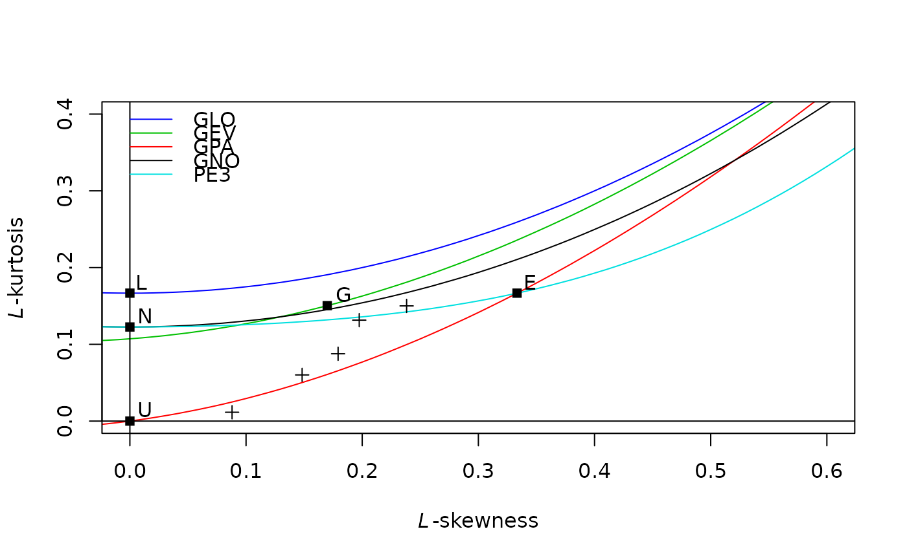

cdf: probability distribution fitting with L-Momentsannual.agg.cdf.RdMirror of cdf: probability distribution fitting with L-Moments
annual.agg.cdf(
x,
para,
f.name = "f",
aggr.name = NA,
dd.name = NA,
is_depth = FALSE,
dd_formatter = NA,
...
)
yearly.agg.cdf(...)vector of variable values (pe.g. precipitation intensity).
object returned by annual.agg.pel.
column name for the probabilities/frequancies. Default is "f".
column names. see annual.agg.samlmu or annual.agg.pel.
logical. Default is FALSE. It must be set TRUE in case x refers to precipitation depth.
string formatter for duration in the function value (currently not used).
further arguments.
a data frame containg values, probabilities/frequencies and duration values
library(RMAWGEN)
data(trentino)
time <- as.Date(sprintf("%04d-%02d-%02d",PRECIPITATION$year,
PRECIPITATION$month,PRECIPITATION$day),format="%Y-%m-%d")
x <- PRECIPITATION$B8570
y <- annual.agg(x,dd=1:20,time)
lmom <- annual.agg.samlmu(y)
## TO CONTUE
y <- annual.agg(x,dd=1:5,time)
lmom <- annual.agg.samlmu(y)
lmrd(lmom)

z <- annual.agg.pel(distrib="gpa",x=y,lmom=lmom)
#> Warning: ties should not be present for the one-sample Kolmogorov-Smirnov test
#> Warning: ties should not be present for the one-sample Kolmogorov-Smirnov test
#> Warning: ties should not be present for the one-sample Kolmogorov-Smirnov test
ff <- annual.agg.qua(f=c(0.5,0.9),para=z)
#> Warning: minimal value for n is 3, returning requested palette with 3 different levels
out <- annual.agg.cdf(x=ff$aggr,para=z)
out[out$f %in% ff$f,]
#> aggr f dd
#> D001.1 51.20952 0.5 1
#> D001.2 82.35318 0.9 1
#> D002.3 33.92243 0.5 2
#> D003.5 25.82522 0.5 3
#> D003.6 40.12320 0.9 3
#> D004.7 21.49592 0.5 4
#> D005.9 18.45576 0.5 5
#> D005.10 27.10756 0.9 5
ff
#> f dd aggr rt
#> 1 0.5 1 51.20952 2
#> 2 0.9 1 82.35318 10
#> 3 0.5 2 33.92243 2
#> 4 0.9 2 54.53665 10
#> 5 0.5 3 25.82522 2
#> 6 0.9 3 40.12320 10
#> 7 0.5 4 21.49592 2
#> 8 0.9 4 32.61330 10
#> 9 0.5 5 18.45576 2
#> 10 0.9 5 27.10756 10